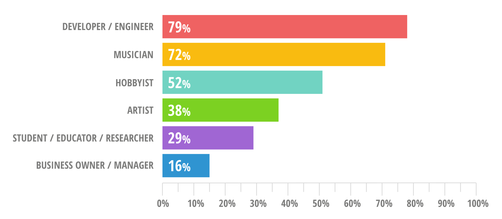
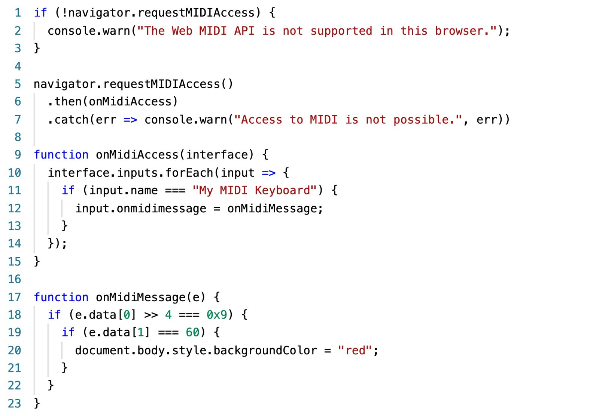
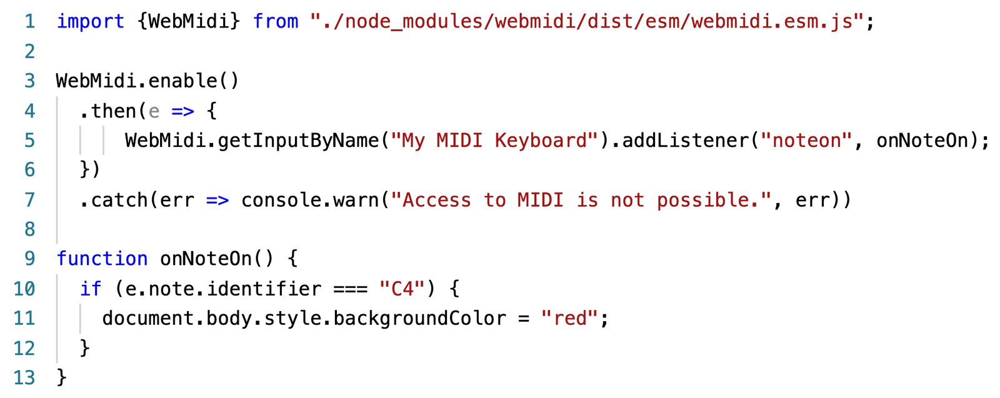

User-Friendly MIDI in the Web Browser
ABSTRACT
The Web MIDI API allows the Web browser to interact with hardware and software MIDI devices detected at the operating system level. This ability for the browser to interface with most electronic instruments made in the past 30 years offers significant opportunities to preserve, enhance or re-discover a rich musical and technical heritage. By including MIDI in the broader Web ecosystem, this API also opens endless possibilities to create music in a networked and socially engaging way.
However, the Web MIDI API specification only offers low-level access to MIDI devices and messages. For instance, it does not provide semantics on top of the raw numerical messages exchanged between devices. This is likely to deter novice programmers and significantly slow down experienced programmers. After reviewing the usability of the bare Web MIDI API, the WEBMIDI.js JavaScript library was created to alleviate this situation. By decoding raw MIDI messages, encapsulating complicated processes and providing semantically significant objects, properties, methods and events, the library makes it easier to interface with MIDI devices from compatible browsers.
This paper first looks at the context in which the specification was created and then discusses the usability improvements layered on top of the API by the open-source WEBMIDI.js library.
Author Keywords
Web MIDI API, Usability, JavaScript Library, Music, Browser, Web Platform
CCS Concepts
Applied computing → Arts and humanities; Sound and music computing;
Introduction
Since the mid-1980s, the Musical Instrument Digital Interface (MIDI) protocol has been the de facto standard for communication between electronic musical devices [1]. As computers and software musical instruments became more prevalent in music creation, the protocol naturally got carried over. With support in all major operating systems and with the implementation of various new transport layers (such as serial, FireWire, Ethernet, and USB), MIDI became almost ubiquitous in the world of computer-assisted music creation. MIDI was then considered the “nexus of music, software, and computer technology” [2].
However, until the 2010s, although “Web technologies provide an unsurpassed opportunity to present new musical interfaces to new audiences” [3], one key platform remained out of reach to MIDI users and developers: the Web platform.
Perhaps because “one of MIDI’s greatest strengths is its ability to evolve” [4] things started to change in 2011. This is the year that Sema Kachalo released Jazz-Plugin [5] which, for the first time, brought MIDI to the Web browser. In 2012, the First Public Draft of the Web MIDI API (Application Programming Interface) specification [6] was made public. This specification detailed how browsers should expose MIDI functionalities to Web developers. In 2013, an experimental implementation was brought to Google Chrome by engineer Takashi Toyoshima [7]. Two years later, in 2015, the Web MIDI API officially started shipping with Chrome version 43.
Today, the Web MIDI API is natively and officially supported in the Edge, Chrome and Opera browsers. Mozilla just released a nightly version of Firefox with experimental support. The only outlier is Apple, which has decided not to support the Web MIDI API – and several others – over fingerprinting concerns [8]. In short, over the last ten years, the Web MIDI API has grown from a niche idea to a mainstream API.
Already in 2013, it was widely recognized that “the browser offers some unique capabilities for musicians due to its natural connectedness, its huge developer community, and the ease of access and portability of work it provides.” [9]. The browser is, arguably, the most common computing platform in use today, with support for various devices and most operating systems.
By allowing a contemporary technology (the browser) to interface with a plethora of devices made over more than 30 years, the Web MIDI API facilitates the preservation of a rich musical and technical heritage. Looking forward, by opening the doors of the MIDI protocol to the Web platform and its rich ecosystem of libraries, tools, developers and supporting devices, this API sets the stage for a continued future of innovation combining the ubiquity and connectivity of the Web with the universality of MIDI. Furthermore, considering that MIDI is a lightweight protocol, that browsers are freely available and that both can work in limited performance environments, their combination extends the accessibility of MIDI to a broader audience.
This inquiry into the usability of the Web MIDI API aims to facilitate its adoption and use by Web developers and programmatically inclined musicians. It also informed the design decisions made while developing version 3 of the WEBMIDI.js library, which this article will also be presenting.
On the Usability of W3C APIs
Before we look specifically at the usability of the Web MIDI API, let us quickly survey the subject with a broader lens. Usability is a core value of the World Wide Web Consortium (W3C). The focus on usability is described, amongst others, in a document called Accessibility, Usability and Inclusion [10] produced by the Web Accessibility Initiative. Usability is generally understood as the “extent to which a system, product or service can be used by specified users to achieve specified goals with effectiveness, efficiency and satisfaction in a specified context of use” [11]. In an essay called What is a good standard? published on W3C’s website [12], the author views usability as the overarching principle to guide all others. However, in the first paragraph of the introduction, the author, speaking of formats, clarifies that there are always “compromises between human-readability and computer efficiency”. The same applies to the design of an API through a specification. Committees and editors working on specifications must balance usability with ease of implementation, maintainability, and interoperability. In this regard, adding complexity to an API for the sake of usability is not necessarily an attractive proposition as it is likely to delay and complicate the specification process. Generally, the driving objective is for the API to meet its goal and do so using the shortest and simplest path to implementation. That is not to say that committees go out of their way to make an API challenging to use; on the contrary. It simply means that if the API provides all the necessary functionalities, usability layers are implicitly expected to be added later.
The Web MIDI API specification clearly states that it provides “low-level access to the MIDI devices” and that “it is designed to expose the mechanics of MIDI input and output interfaces, and the practical aspects of sending and receiving MIDI messages, without identifying what those actions might mean semantically” [13]. The semantics of MIDI messages are explicitly kept outside the scope of the API. While this is appropriate from the specification’s standpoint, it does leave a void in terms of broader usability. From a Web developer’s perspective, this is likely to translate into unfulfilled expectations. This may be why some of them voice strong opinions such as this one taken from the survey 1 I conducted at the start of this research project: “The API decided by the browser makers/standards bodies is pretty crappy (as usual) and the documentation is always bad.” While this type of knee-jerk reaction disregards the actual aim of the specification, it does speak to the presence of a usability gap, real or perceived, between the specification, the implemented API and the expectations of (at least some) developers. This issue was recognized as early as 2002 in a position paper for the W3C Usability workshop where it said: “W3C develops technical recommendations that often seem to be quite far away from the end user reality (…)” [14]. However, it must be said that specifications are not tutorials or user manuals. They use precise, often technical, language meant to unequivocally facilitate the implementation of features by software engineers. David Eisenberg (as reported by Zeldman [15]) explained it in this way:
“When you seek answers, you’re looking for a user manual or user reference guide; you want to use the technology. That’s not the purpose of a W3C specification. The purpose of a ’spec’ is to tell programmers who will implement the technology, what features it must have, and how they are to be implemented. It’s the difference between the owner’s manual for your car and the repair manuals.”
The problem is that the specification itself is often used as an “owner’s manual” during the period following an API’s inception. For instance, several years passed between the first implementation of the Web MIDI API in 2015 and the completion of the documentation on the MDN (Mozilla Developer Network) site, which is the de facto reference for Web developers. During this period, early adopters are faced with two problems: lacking documentation and an API that may be too low-level for their taste. A library often solves both issues. It provides a richer and higher-level API that facilitates usage and often comes with proper documentation and examples. Several such libraries meant to simplify use of W3C APIs have been created to address the needs of developers in various areas (Table 1).
Table 1 – Examples of Libraries Facilitating Usage of W3C APIs
Functionality | W3C API | Example Libraries |
|---|---|---|
Audio | Web Audio API | |
3D Graphics | WebGL | |
Mixed Reality | WebXR Device API | |
2D Graphics | Canvas API |
Considering the opinions of survey respondents and the above examples, the question that this research raises is whether the Web MIDI API warrants developing that same kind of higher-level library to improve its usability and, if it does, the shape that it should adopt.
Methodology
In the field of human-computer interaction, various frameworks can be used to evaluate the usability of software. Only for open-source software (OSS), Dawood et al. [24] studied no less than 29 models and standards used to assess usability. Using a fuzzy Delphi method, they came up with a recommended set of 7 criteria: satisfaction, learnability, efficiency, memorability, robustness, effectiveness, and accessibility. While these criteria are deemed best for OSS projects in general, they are not necessarily best for any specific project. For instance, users and developers of a particular application might establish that, in their context, aesthetics2 is a better criterium to measure usability than robustness. This research, while not overlooking classic usability definitions, is more interested in the localized properties that make MIDI on the Web usable. In some cases, these properties might be generalizable while, in others, they may be highly specific.
In this context, usability is considered to be an evolving property emerging through continued conversation between all the actors involved in the ecosystem of the tool. Authoritative literature may influence said actors, but, in the end, it may bear less weight than the situated experience of an actively-involved, community-conscious and experienced user.
Throughout this research, using an iterative process, potential usability improvements are identified, discussed, implemented (or dropped) and discussed further until they converge towards an acceptable solution, here and now. The actors (developers, users, community members) define both the problem and the solution. They also validate if the solution is appropriate. What is deemed a positive usability vector is not enshrined in stone. It may stay, evolve or even disappear. Therefore, usability is not seen as an objectively measurable static goal but rather as an evolving and enacted process. The underlying epistemological approach is inductive and inspired by the broad field of practice-based research. More specifically, in this case, data is gathered through conversations (which should not be confused with interviews). To get conversations started, early and potential users of MIDI on the Web were invited to fill in a survey composed of various multiple choices questions and free-form comment fields. Then, each respondent was contacted by email to explore the nature of the comments, questions and suggestions they formulated. More than the multiple choices questions, these conversations (and those that popped up on the project’s forum and on the library’s issue page) represent the data that was used to assess and improve the usability of MIDI on the Web.
This iterative approach took place over more than a year via a process that Paquin calls “heuristic cycles”. The cycles are considered heuristic “because they allow the research-creation project to be updated and gradually discovered by doing and not only by intellection” [translated from French] [25]. In that sense, each updated instance of the API was an “object-to-think-with” [26] which served as a frame of reference for both research and discussion.
On the Origins of the WEBMIDI.js Library
The explicit goal of the Web MIDI API is to expose just enough of the operating system’s MIDI layer so the browser can enumerate available devices, send outbound messages, and receive inbound messages. However, this means programmers may find the API too low-level or limited. This is precisely what I felt when I started experimenting with the Google Chrome implementation of the Web MIDI API in 2015. The API itself was relatively easy to use, but it offered no help in parsing out the semantics of MIDI messages. This meant constantly referring to the MIDI 1.0 specification [27] and, as stated earlier, a specification is not a user-friendly manual. It quickly became apparent that dealing with raw MIDI messages was seriously hindering the development process. I suspected many other musicians and developers would feel this same hindrance weigh them down. This was the original prompt for the development of the WEBMIDI.js JavaScript library.
Version 1 of the library (released in 2015) was essentially a personal and incomplete set of tools that helped me listen to and parse MIDI messages in a somewhat easier fashion. It lacked structure, and the documentation was limited.
With version 2, I tried to explicitly create a library that others could use and whose feature set would not be limited to my personal tastes and idiosyncratic ways. I refined the API and improved the documentation. The library grew in popularity, and I was now getting valuable feedback from users who had put the library to use in actual production contexts. It slowly became clear that this personal passion project could become a library of choice for developers interested by MIDI on the Web. However, to achieve that, significant changes needed to be implemented. The architecture had to be modernized, it needed decent documentation and examples, and, more importantly, user-perceived usability had to be evaluated and improved.
On the Usability of the Web MIDI API
To better portray developers’ perception of the usability of the Web MIDI API and of the WEBMIDI.js library, a survey was developed. It was meant to gather feedback from both current and potential users of MIDI in the browser. An open invitation to participate was sent via Twitter, and visitors of the library’s GitHub repository were also invited to fill in the survey. In total, 58 respondents voluntarily decided to participate.
Before going further, I should point out that the survey is biased in favour of developers already familiar with MIDI on the Web and the WEBMIDI.js library. Nevertheless, the answers were very insightful and provided a portrait of the needs of musicians and developers currently involved with the technology.
I will not go through each question3 in detail, but, to get an idea of who the audience is, it is interesting to note how respondents self-identified themselves in relation to their usage of MIDI on the Web (Figure 1).


Self-identified MIDI Usage Role (From Survey)
A substantial proportion of respondents identified as developers or engineers, and a majority of them (64%) also considered themselves both developers and musicians or artists.
Regarding my interrogation on the pertinence of a library, 93% of respondents answered “Yes” to the question “Do you think there is a need for a higher-level library that simplifies the usage of the lower-level Web MIDI API?”. In the same vein, 44% of respondents expressed in a free-form comment the need for such a higher-level library that would abstract away the intricacies of the MIDI protocol. The general impression from the survey can perhaps be summed up by this quote: “MIDI is an arcane communication protocol designed for terseness and not understandability. It's important to have a library that sits on top so that we don't need to read the spec every time we want to send a MIDI note on.” The quoted respondent is Yotam Mann, creator of the popular Tone.js library [28].
It seems many others shared this impression of the Web MIDI API. But why, exactly, did users find the Web MIDI API challenging to approach? Let us first start by looking at a typical scenario: someone with modest programming skills wants to change the state of a Web page when C on the 4th octave is played on a USB-connected MIDI keyboard. How would that be done?
Based on experience, it might be expected to add an event listener to a keyboard object that would then execute a function when a note is played. The function would check if the played key is C4 and, if it is, change some attribute of the page. Let us look at how this can be done using the bare Web MIDI API and see if the expectations match the reality.


Basic Web MIDI API Example
The first step is to check if the API is supported and react if it is not (lines 1 to 3). This is necessary because not all browsers support the API yet. Then, a request to access MIDI devices must be made (line 5). This typically prompts the user to grant the browser access to MIDI devices. If the user forbids access, a warning is displayed in the console (line 7). If the user grants access (line 6), the onMidiAccess() function is called. This function goes through all available input MIDI devices to identify by name the one that should be used. Once identified, a listener function (onMidiMessage) is defined to handle all incoming MIDI messages from that device (lines 10 to 14). If the user now presses a key on the external physical MIDI keyboard, the onMidiMessage() function is called. The function must first identify the kind of message coming in. MIDI has several types of messages such as note on, note off, control change or pitch bend. In this case, we want to act only when a “note on” message is received. To do that, we must look at the first four bits of the first byte of the MIDI message (line 18). If the extracted value is hexadecimal 0x9, we have a noteon message. This information can be found in the MIDI 1.0 specification documents [29]. At this point, all that remains is checking if the note is C4. To do that, we look at the value of the second byte of the message (line 19). If it is 60, we know that the key pressed is middle C by cross-referencing the MIDI specification with the scientific pitch notation. In this case, we perform the desired change, which could be, for example, to set the background colour of the page to red (line 20).
For a seasoned programmer, this code is relatively straightforward. Nevertheless, having to look up specification documents is far from being practical or efficient. For a beginner front-end developer or a musician with less programming experience, the learning curve might be intimidating. This is especially true for those unfamiliar with binary arithmetic and specification documents.
Let us now look at how the same operations can be performed using the WEBMIDI.js library.


Basic WEBMIDI.js Example
To use the library, it must first be imported (line 1 of Figure 3). Calling the enable() function checks whether the Web MIDI API is supported and prompts the user for authorization (line 3). If the user denies access, we report it in the console (line 7). If the user grants access, we retrieve the desired input and add a listener for noteon events (line 5). This will trigger the onNoteOn() function. When a noteon event is triggered (by pressing a key on the MIDI keyboard), the function checks if the note is C4 and, if it is, changes the background’s colour (lines 10-12).
When we compare the two code samples, the critical difference is not so much the length of the code, but the meaning present in the second example and absent from the first. It is much easier for a human to understand and remember adding a listener for a noteon event than it is to check if the first four bits of the first byte are equal to 0x9. As we saw earlier, learnability and memorability are key factors in evaluating usability. To use the expressions coined by Green [30], the second example is more “role-expressive” and offers a better “closeness of mapping”. It favours the formation of a clearer mental picture by using developer-recognizable identifiers or, as Brooks calls them, “beacons” [31].
Albeit not the only one, the addition of this semantic layer is arguably the library’s main contribution to improving the usability of MIDI on the Web.
On the Usability of the WEBMIDI.js Library
Talking about the Web Audio API, Wyse and Subramaniam distinguished two types of users: the interactive sound developer and the interactive sound user [9]. The latter is also a developer, but his primary goal is to play with sound and music, not necessarily explore the intricacies of the underlying audio processing system. A similar distinction can be made with regards to the Web MIDI API. While some users will be compelled to dive into the inner workings of the Web MIDI API and its specification, most users will simply want to interface with MIDI devices easily and efficiently. One survey respondent explained it in this way: “As much as I love writing low level code on things there are times when you just want to play.” The WEBMIDI.js library was crafted for the needs of this latter group.
After carefully reviewing the results of the survey, the issues submitted on GitHub, the forum discussions and my notes, four key areas surfaced in terms of what could be done to improve the usability of the library:
API & Architecture
MIDI Semantics
Process Encapsulation
Language & Tooling
API & Architecture
The API is the most visible part of any library. It defines the experience of the library user. Great care and time must be taken when designing it.
While some survey respondents considered the Web MIDI API straightforward, others had the opposite view: “The W3C API is not obvious or trivial to use”. Therefore, the challenge was to make the library user-friendly while preserving advanced control by expert users. One such expert had this to say: “it's important to not make decisions based on making it easy to use if someone doesn't know basic JavaScript”, adding “hiding low level details is an anti-pattern”.
The guiding principle for the development of version 3 was this: common tasks must be obvious, specialized tasks must be achievable, and both should be made as simple as appropriate. This is derived from the ideas of “low threshold and high ceiling” and “path of least resistance” as used by Myers et al. [32]
For example, to play middle C in the library, one can use Output.playNote("C4"). However, should you want to control additional parameters, it remains possible:
OutputChannel.playNote(new Note("C4", {attack: 0.5, rawRelease: 127}), {duration: 50});In version 3, several methods and properties were deprecated for the sole purpose of clarifying and unifying the API. I would argue that a library author must have the humility to correct poor design decisions. Deprecated elements still work but trigger a warning in the console. While backward compatibility is important, it should not impede a properly planned evolution. An API that is clear, logical and adapted to its current usage adds value for users.
Backward compatibility was largely maintained in version 3. Forward compatibility was also considered. Web developers have suffered because of unequal or changing implementation of features between browsers and versions. Because the Web MIDI API is still an editor’s draft, comments from the survey reflected that: “It appears that the API is unstable, and we need a consistent API to develop against.” Even if I have not observed any problematic changes to the API or its implementations, being aware of that as a library author promotes good decision-making.
The most significant changes made to the architecture all relate to semantic considerations. For instance, musicians requested a dedicated Note object. To them, it makes sense to pass a Note object to the playNote() method. It also makes sense to get a Note object when a noteon event is triggered. A new Message object was also added because musicians with prior MIDI experience wanted a forwarding mechanism like the THRU port on physical MIDI devices. With a Message object, you can easily forward every inbound message to an output port. Having a Message object helps users understand how information is routed within the library.
In the same vein, MIDI channels were decoupled from the Input and Output objects found in prior versions. Now, both Input and Output have a channels property which is an array of all 16 available MIDI channels. If your instrument is on channel 10 of a specific input, you can reference that channel in a variable and work solely with it. This reflects the actual usage of a musician. While MIDI is technically a communication protocol, it is used in a context that is, typically, music. The API should therefore make sense to musicians.
Efforts were also deployed to encourage usage amongst new users and non-programmers. For instance, the main driver to add the InputChannel.getNoteState() method came from comments voiced by users of the p5.js library [33]. The p5.js creative coding library is specifically aimed at artists, beginning coders, and users with varying skill sets.
MIDI Semantics
“I don't want to look at the MIDI spec to know how to parse integers when I'm writing a music app.” This comment from the survey sums up the main concern regarding the Web MIDI API. Many potential users of MIDI on the Web have modest development experience and may be intimidated by a high initial learning curve. As one respondent puts it: “There are still musicians who are not as familiar enough with programming but can bring worthwhile musical perspective and creativity.”
Even for experienced developers, having semantically meaningful names for methods, properties, events, and messages is useful. WEBMIDI.js “makes it easy for open source developer to follow their quick ideas -- spawning way more motivation than having to study the details of MIDI implementation first”. For those reasons, version 3 went further in the parsing of MIDI messages to extract and derive as much meaningful information as possible. This was mostly driven by the user-submitted idea to create a Message object.
Even small details can make a significant difference in usability. For instance, developers reported on GitHub that they were surprised that some values (e.g. pitch bend) were expressed as decimal numbers between 0 and 1. Normalizing values in this way is a common practice. However, previous users of the MIDI protocol were expecting to set values by using integers between 0 and 127 (7bit). For backward compatibility reasons, it was decided to keep the normalized value (0-1) by default. However, the possibility to use 7bit values through a different parameter was added. Minor considerations, such as this one, also contribute to the general impression of usability. Acknowledging and engaging with users who report problems and propose suggestions enhances the sense of community surrounding a project. By being iterative and responsive, the methodology used in this research and development process allowed for the inclusion of unforeseen and serendipitous ideas.
Process Encapsulation
Another area of improvement that was explored is the encapsulation of processes. An example of that is the parsing of NRPN (Non-Registered Parameter Numbers) message sequences widely used in modern MIDI instruments. NRPN support raised repeated questions in the forum and was requested multiple times in the survey. Each of these requests was an occasion to engage with users and better understand what it meant when they requested “high level functions to deal with NRPN and RPN”. What do you mean by “high level”? What do you mean by “deal with”? Written discussion proved to be an invaluable tool in the software design process.
NRPNs add to the original MIDI specification allowing control of additional device parameters. Contrary to most MIDI commands which are atomic (sent in a single message), NRPNs are constructed from a sequence of several messages. To correctly parse an NRPN sequence, the library must maintain state between messages and ensure they arrive in the proper order. Here, the library not only deals in semantics (by dispatching a properly-named event), but it also encapsulates a complex process behind a single function call:
InputChannel.addListener("nrpn", e => {
console.log(e.parameter, e.value);
});In the same vein, the library handles processes such as filtering and forwarding messages, managing note state and maintaining granular octave adjustments across channels and devices. These are all features requested by early testers or survey respondents.
Language & Tooling
Version 3 was also the opportunity to modernize the library’s programming layer. Support for such things as TypeScript, promises and ES modules was added. Most user suggestions in this regard were implemented because most of these suggestions were judged relevant. Some were debated, and a few were ignored.
Perhaps the most significant change in this area is the new ability to use WEBMIDI.js on the desktop via Node.js. This means both front-end and back-end of a MIDI project can be created with the same skillset. This facilitates the creation of socially engaging and remotely available music creation, production and learning environments. This feels particularly relevant in these pandemic times.
One quote from the survey that well-represented the project’s goal is this one: “I think there is a void in terms of application for engineers and musicians which are open source. This can help foster new musicians and inspire developers to create.” I would go even further by saying that the Web is the new frontier to conquer for music.
On the Future of Music on the Web
At the turn of the millennium, musical instruments, which essentially had forever been standalone physical devices, started dematerializing and migrating to software. However, they generally remained localized to a user’s computer. With the Web Audio and Web MIDI APIs maturing, you can expect software instruments to delocalize and migrate to the Web platform in greater numbers. Such Web-based musical instruments, and audio effects, already exist. For a list of examples relating specifically to WEBMIDI.js, look at the Showcase section of the library’s website. Projects are being created in numerous areas such as education, hardware control, live coding and musical notation. Various experiments are ongoing, and you can even find Web MIDI implementations in unexpected places such as robotics frameworks.
Specifications and formats to support the portability and compatibility of Web-based musical instruments and audio effects have already been proposed. Amongst them, we find the Web Audio Module (WAM) proposition that defines an audio plug-in format for instruments and effects [34] and WebMidiLink [35], which allows those same instruments to exchange data with Web-based host software such as digital audio workstations (DAW). In other words, the groundwork for the next step in music creation has slowly but steadily been laid out.
This research and the resulting WEBMIDI.js library are attempts at bringing us closer to this next evolutionary step in music.
Acknowledgements
I want to express my utmost gratitude to all survey respondents for providing invaluable insights into how MIDI on the Web is used. I would also like to thank the users who took the time to report issues, formulate suggestions and otherwise help with the development of the library. Finally, let me also thank my research assistant, Jean-Marie Gariépy, for his willfulness to tackle any task sent his way.
Ethics Statement
The writing of this paper was supported by a grant from Cégep Édouard-Montpetit in the scope of a broader research project, titled “Améliorer l’utilisabilité du protocole MIDI sur le Web” (Improving the Usability of the MIDI protocol on the Web).
The research was conducted freely and without any financial or non-financial relationships that could be construed as a conflict of interest, real or perceived.
Survey respondents gave explicit consent to participate and were informed that their answers might be used anonymously for ulterior research purposes and published in academic publications. In cases where respondents are identified, their written approbation has been duly obtained.
WEBMIDI.js is an open-source project (Apache 2.0 license) that is freely available to all. It is built on top of open standards published by the World Wide Web Consortium (W3).
It should also be noted that the MIDI protocol has repeatedly been used to develop interfaces for people with disabilities. By improving the usability of MIDI on the Web, it is hoped that the library will facilitate the development of a new wave of inclusive and networked interfaces be they ad hoc or generalized.
MIDI has also been deployed outside the musical realm to support socially significant endeavours. One survey respondent stated that the library is being used “to deliver hands-on clinical breast exam training through the browser”. So, there are early signs that this research and the library it helped build can also have social significance beyond music.
Footnotes
Survey results are available at: https://webmidijs.org/research/usability-survey/anonymized-answers.xlsx
↩Aesthetics was cited several times by Dawood et al. but did not make the final cut.
↩Survey questions are available at https://webmidijs.org/research/usability-survey/questions.pdf
↩
Citations
- ↩Loy, G. (1985). Musicians Make a Standard: The MIDI Phenomenon. Computer Music Journal, 9(4), 8. https://doi.org/10.2307/3679619
Rothstein, J. (1995). MIDI: A Comprehensive Introduction (2nd ed.). A-R Editions.
↩- ↩Roberts, C., Wakefield, G., Wright, M., & Kuchera-Morin, J. (2015). Designing Musical Instruments for the Browser. Computer Music Journal, 39(1), 27–40. https://doi.org/10.1162/comj_a_00283
Joseph Rothstein, MIDI: A Comprehensive Introduction, 2nd ed., The Computer Music and Digital Audio Series, v. 7 (Madison, Wis: A-R Editions, 1995), xi.
↩Sema Kachalo, Jazz-Plugin, version 1.0, 2011, https://jazz-soft.net/download/Jazz-Plugin/.
↩Jussi Kalliokoski and Chris Wilson, “Web MIDI API - W3C Working Draft,” 2012, https://www.w3.org/TR/2012/WD-webmidi-20121025/.
↩Chris Wilson and Takashi Toyoshima, “Intent to Implement: Web MIDI API,” 2013, https://groups.google.com/a/chromium.org/g/blink-dev/c/KUx9s-XFdj0/m/PPZcwE4l3ScJ.
↩Apple, Inc., “Tracking Prevention in WebKit,” WebKit, 2020, https://webkit.org/tracking-prevention/.
↩- ↩Wyse, L., & Subramanian, S. (2013). The Viability of the Web Browser as a Computer Music Platform. Computer Music Journal, 37(4), 10–23. https://doi.org/10.1162/comj_a_00213
Shawn Lawton Henry, Shadi Abou-Zahra, and Kevin White, “Accessibility, Usability, and Inclusion,” Web Accessibility Initiative (WAI), 2010, https://www.w3.org/WAI/fundamentals/accessibility-usability-inclusion/.
↩International Organization for Standardization, “Ergonomics of Human-System Interaction - Part 11: Usability: Definitions and Concepts (ISO 9241-11:2018),” 2018, https://www.iso.org/standard/63500.html.
↩Bert Bos, “What Is a Good Standard? An Essay on W3C’s Design Principles,” W3C, 2003, https://www.w3.org/People/Bos/DesignGuide/introduction.
↩Chris Wilson and Jussi Kalliokoski, “Web MIDI API - W3C Editor’s Draft, 26 October 2021,” 2021, https://webaudio.github.io/web-midi-api/.
↩Marja-Riitta Koivunen and Matt May, “Exploring Usability Enhancements in W3C Process,” W3C, 2002, https://www.w3.org/2002/09/usabilityws.html.
↩Jeffrey Zeldman, “The Trouble with Standards,” in Designing with Web Standards, 2nd ed., Voices That Matter (Indianapolis: New Riders, 2007).
↩Yotam Mann, Tone.Js, version 14.7.39, 2020, https://tonejs.github.io/.
↩Charlie Roberts, Gibberish, version 3.3.1, 2022, https://www.charlie-roberts.com/gibberish/.
↩Ricardo Cabello, Three.Js, version r136, 2022, https://threejs.org/.
↩Microsoft, David Catuhe, and David Rousset, Babylon.Js, version 4.2, 2022, https://www.babylonjs.com/.
↩Diego Marcos, A-Frame, version 1.2, 2022, https://aframe.io/.
↩Jérôme Étienne, AR.Js, version 3.3.3, 2021, https://github.com/AR-js-org/AR.js.
↩Lauren Lee McCarthy, Quianquian Yi, and Evelyn Masso, P5.Js, version 1.4.0, 2022, https://p5js.org/.
↩Richard Davey, Phaser, version 3.55.2, 2022, https://phaser.io/.
↩- ↩Dawood, K. A., Sharif, K. Y., Ghani, A. A., Zulzalil, H., Zaidan, A. A., & Zaidan, B. B. (2021). Towards a unified criteria model for usability evaluation in the context of open source software based on a fuzzy Delphi method. Information and Software Technology, 130, 106453. https://doi.org/10.1016/j.infsof.2020.106453
Paquin, L.-C. (2019). Faire de la recherche-création par cycles heuristiques (version abrégée). http://lcpaquin.com/cycles_heuristiques_version_abregee.pdf
↩Papert, S. (1980). Mindstorms: Children, Computers, and Powerful Ideas. Basic Books.
↩The MIDI Manufacturers Association. (2006). The Complete MIDI 1.0 Detailed Specification, 3rd Edition (p. 334). The MIDI Manufacturers Association. (Original work published 1996)
↩Yotam Mann, “Interactive Music with Tone.js” (Web Audio Conference, Paris, France, 2014), 5.
↩The MIDI Manufacturers Association. (2006). The Complete MIDI 1.0 Detailed Specification, 3rd Edition (p. 334). The MIDI Manufacturers Association. (Original work published 1996)
↩Green, T. R. G. “Cognitive Dimensions of Notations.” In People and Computers V: Proceedings of the Fifth Conference of the British Computer Society, edited by Alistair Sutcliff and Linda Macaulay, 443–60. Cambridge: Cambridge University Press, 1989.
↩- ↩Brooks, R. (1983). Towards a theory of the comprehension of computer programs. International Journal of Man-Machine Studies, 18(6), 543–554. https://doi.org/10.1016/s0020-7373(83)80031-5
- ↩Wyse, L., & Subramanian, S. (2013). The Viability of the Web Browser as a Computer Music Platform. Computer Music Journal, 37(4), 10–23. https://doi.org/10.1162/comj_a_00213
- ↩Myers, B., Hudson, S. E., & Pausch, R. (2000). Past, present, and future of user interface software tools. ACM Transactions on Computer-Human Interaction, 7(1), 3–28. https://doi.org/10.1145/344949.344959
McCarthy, Lauren, Casey Reas, and Ben Fry. Getting Started with P5.js: Making Interactive Graphics in JavaScript and Processing, 2016. http://www.vlebooks.com/vleweb/product/openreader?id=none&isbn=9781457186752.
↩Jari Kleimola and Oliver Larkin, “Web Audio Modules,” in Proceedings of the 12th International Conference on Sound and Music Computing (12th Sound and Music Computing Conference, Maynooth: Maynooth University, 2015).
↩g200kg, “WebMidiLink,” g200kg Music & Software, 2012, https://www.g200kg.com/en/docs/webmidilink/index.html.
↩